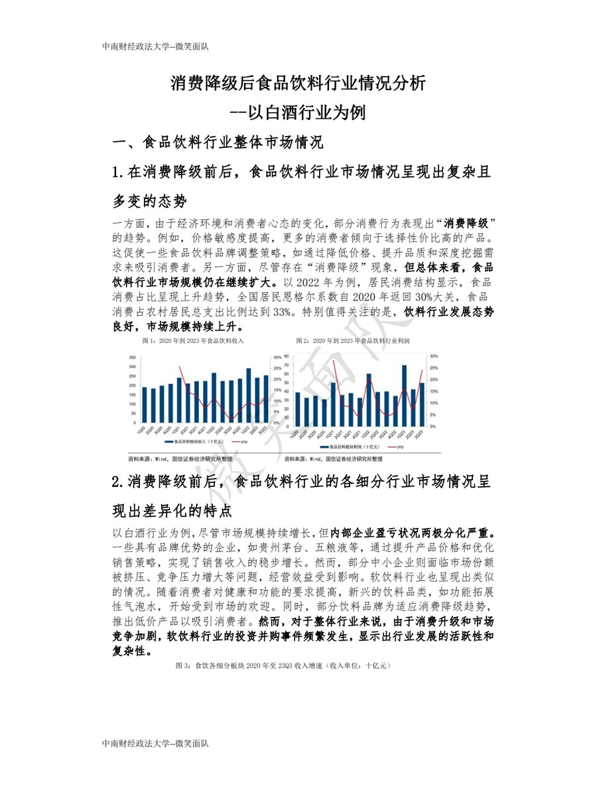
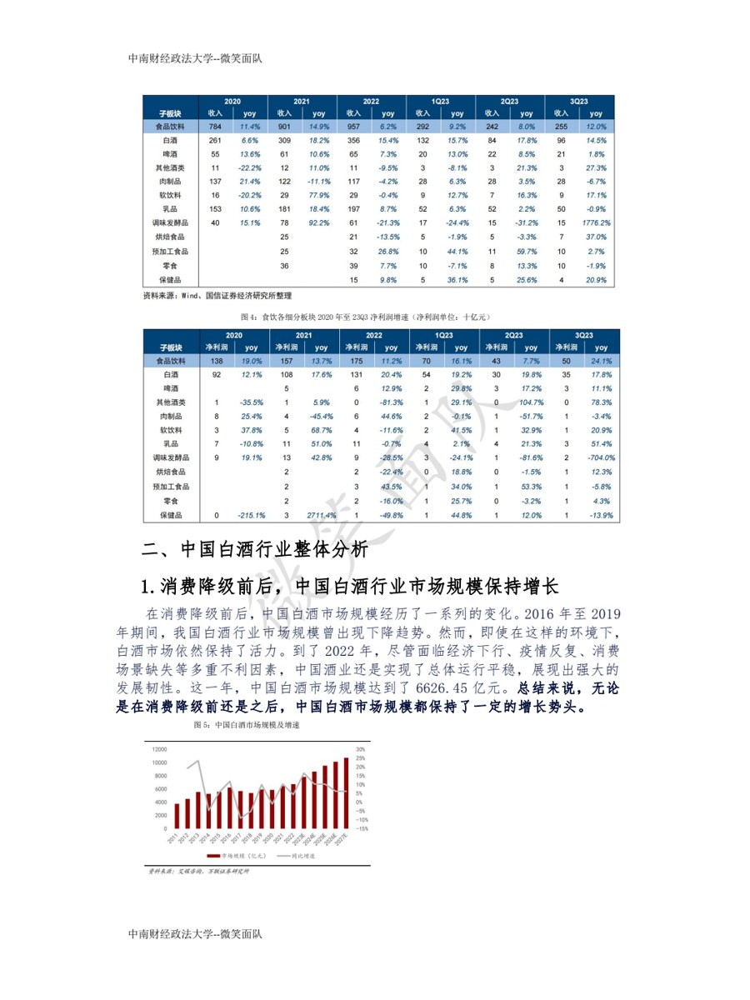
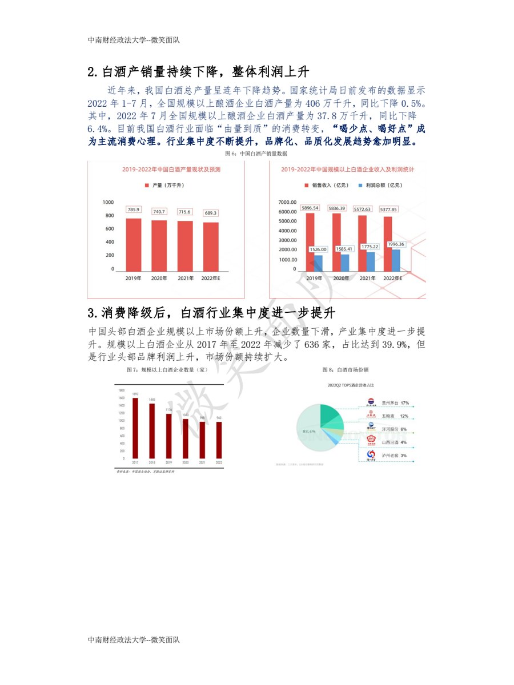

金融与行业研究
围绕餐饮连锁、白酒行业、企业投融资与门店扩张做信息收集、行业拆解、竞品对标和经营逻辑判断。
Economics & Finance / Business Analysis / Machine Learning
把研究、数据和表达做成能被看见的成果。
中南财经政法大学经济与金融本科生，关注金融投资、商业分析、管理咨询、市场运营与金融风控。这里集中展示我在行业研究、产品服务设计和机器学习建模中的代表性项目产出。
Profile
围绕餐饮连锁、白酒行业、企业投融资与门店扩张做信息收集、行业拆解、竞品对标和经营逻辑判断。
使用 Python、SQL、Excel 与 Choice，完成数据清洗、特征工程、模型对比、指标评估和结果解释。
有产品服务设计、案例分析报告、PPT 路演和互动页面经验，能把复杂问题整理成清晰的交付成果。
Experience
围绕餐饮连锁及线下门店扩张开展行业研究，整理品牌定位、门店网络、经营模式与扩张动态，为 RBF 收入分成项目初筛提供信息支持。
参与项目初筛、资料收集、尽调问题梳理与流程跟踪，从现金流、收入可管控性、单店模型及合规性等维度形成分析要点，并协助推进投资方案。
从零参与小红书账号内容策划与 SEO 优化，围绕品牌及课程主题撰写推广内容，单篇最高阅读量超过 3 万。
支持线上线下营销活动方案设计、资源协调、现场执行与数据复盘，根据活动反馈提出优化建议，活动目标达成率提升 10% 以上。
Project Experience
带领团队设计面向中国老年群体的 Health Buddy 产品与社区服务方案，连接雀巢、社区、老人及家庭照护者，拓展品牌在银发健康场景中的触点。
运用 STP、用户画像、市场规模与趋势分析、竞品对标和服务流程设计完成市场定位及商业方案，统筹研究分工、方案整合与路演呈现。
围绕旅客传送结果预测任务，处理 8,693 条训练样本与 4,277 条测试样本，完成缺失值处理、特征工程、模型训练与提交文件生成。
对比 Logistic Regression、Random Forest、Extra Trees、XGBoost 与 LightGBM，最优 LightGBM 五折交叉验证 Accuracy 0.8109、F1 0.8132、ROC-AUC 0.9057，并用特征重要性解释消费、舱位与年龄变量影响。
围绕白酒行业库存压力、价格体系与消费分层开展研究，使用 Choice 金融终端整理企业及行业数据，完成 17 页行业分析报告并获团队一等奖。
运用波特五力、SWOT 与竞品对标分析茅台、五粮液等企业，提出高端市场增长与低端市场扩容建议，统筹分工及路演呈现。
Project Deliverables
01 / Case Report
报告聚焦消费降级背景下食品饮料行业与白酒行业变化，覆盖行业规模、竞争格局、上下游议价能力、替代品威胁与企业策略建议。页面展示已去除个人署名，仅保留成果内容与项目标题。



02 / Interactive Demo
这是一个可交互的产品展示页面，用来呈现智能陪伴犬、子女端 App、营养建议、巡护和紧急警报流程。展示副本已把演示人物姓名替换为泛称，避免出现无关姓名。
03 / Kaggle PPT
项目围绕 Kaggle Spaceship Titanic 竞赛，完成 8,693 条训练样本与 4,277 条测试样本处理，比较 Logistic Regression、Random Forest、Extra Trees、XGBoost 与 LightGBM，最终以 LightGBM 作为最优模型。
Skills
普通话母语；英语 CET-4 540+，CET-6 520+。
Contact
目前关注金融投资、商业分析、管理咨询、市场运营及金融风控相关机会。